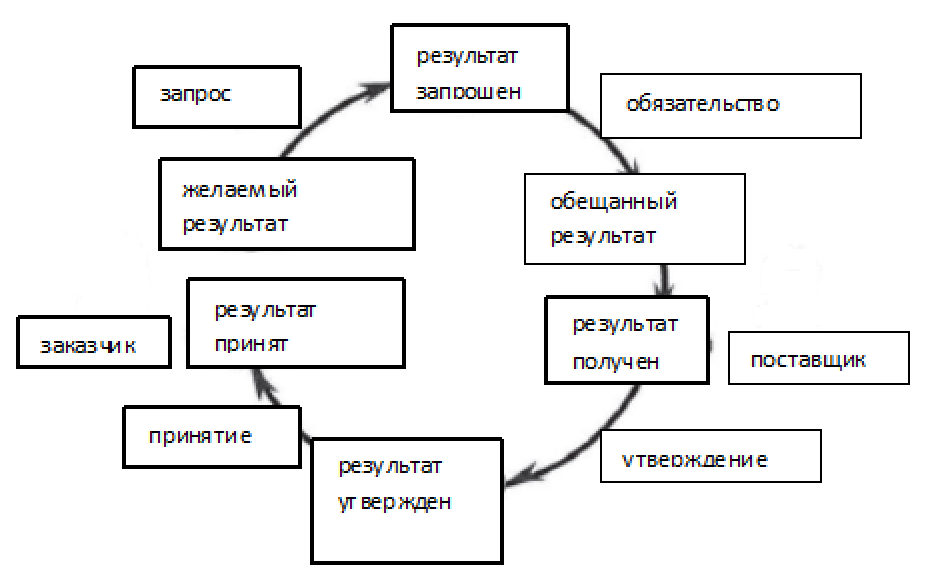
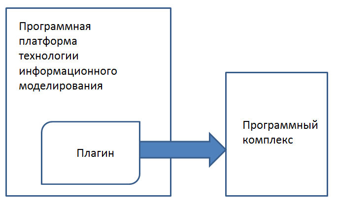
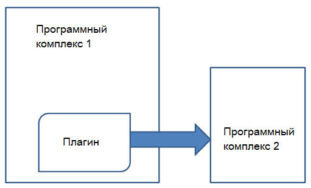
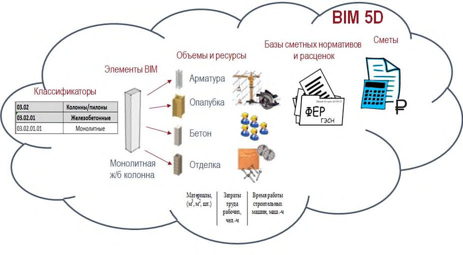
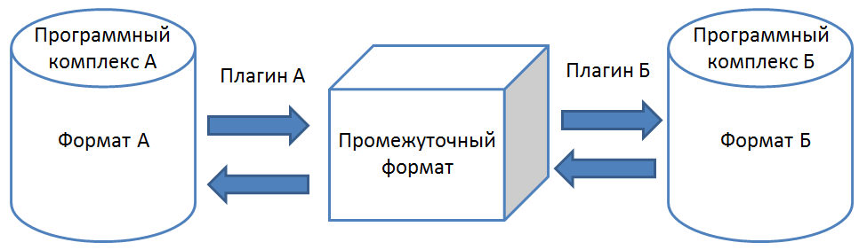
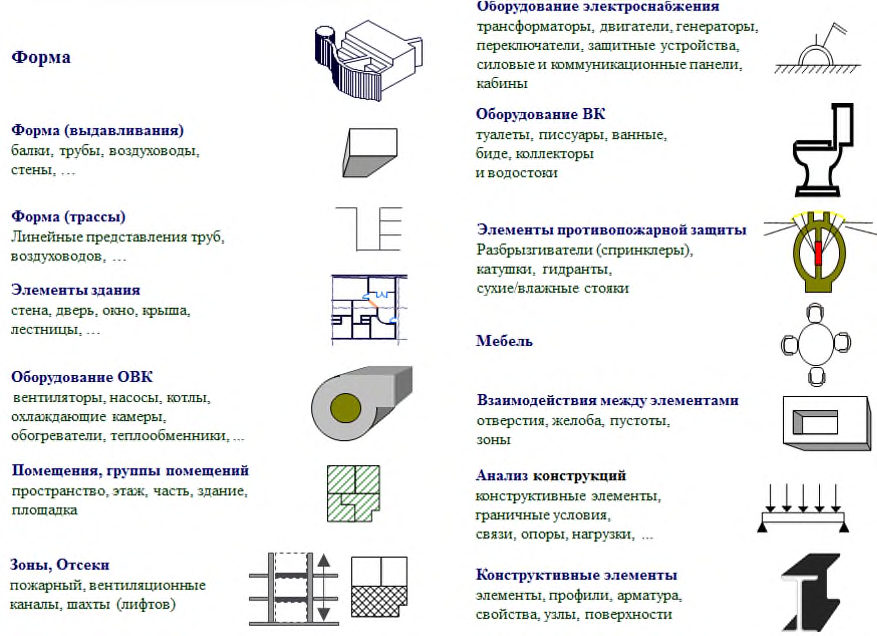
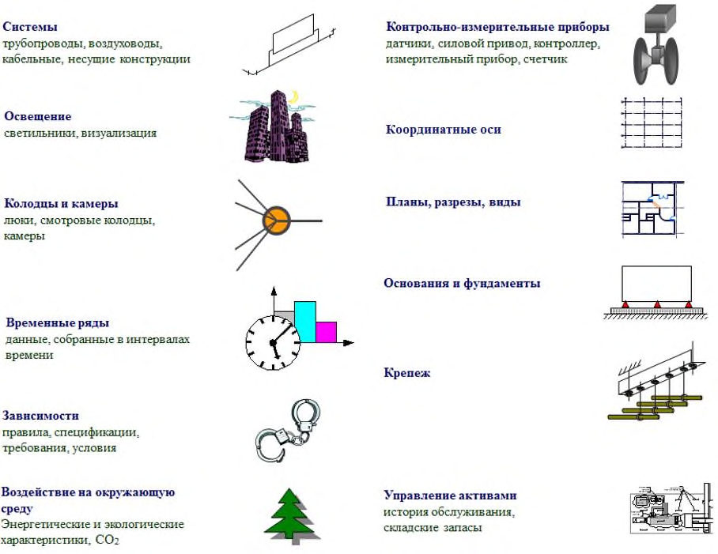
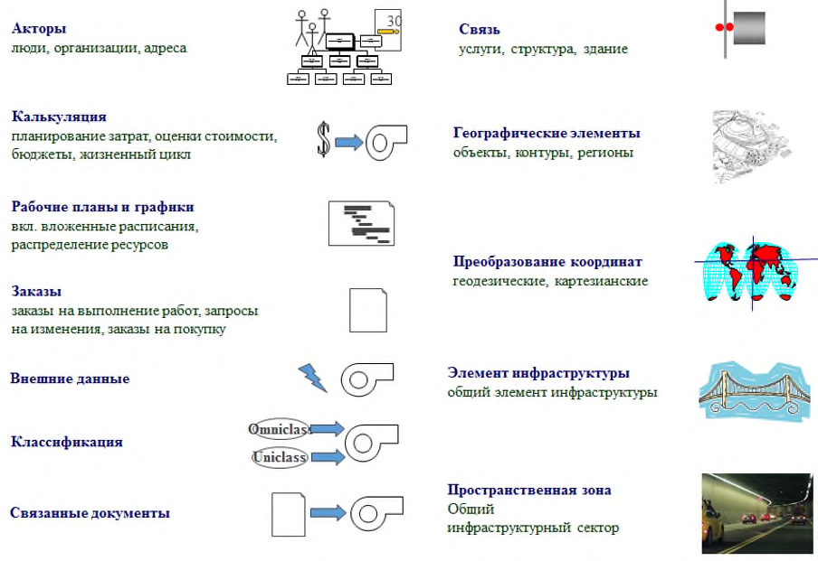
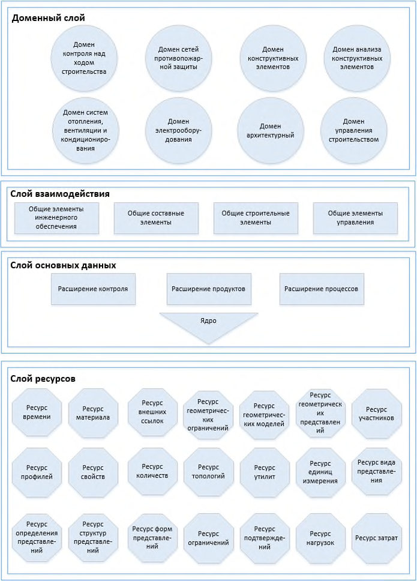

СП 331.1325800.2017 «Информационное моделирование в строительстве. Правила обмен»
О документе: разработчики, утверждение, регистрация, ключевые слова
СВОД ПРАВИЛ
СП 331.1325800.2017
Информационное моделирование в строительстве. Правила обмена между информационными моделями объектов и моделями, используемыми в программных комплексах
Издание официальное
1 ИСПОЛНИТЕЛЬ - Акционерное общество «Научно-исследовательский центр «Строительство» (АО «НИЦ «Строительство») - Центральный научноисследовательский институт строительных конструкций им. В.А. Кучеренко (ЦНИИСК им. В.А. Кучеренко)
2 ВНЕСЕН Техническим комитетом по стандартизации ТК 465 «Строительство»
3 ПОДГОТОВЛЕН к утверждению Департаментом градостроительной деятельности и архитектуры Министерства строительства и жилищнокоммунального хозяйства Российской Федерации (Минстрой России)
4 УТВЕРЖДЕН И ВВЕДЕН В ДЕЙСТВИЕ Приказом Министерства строительства и жилищно-коммунального хозяйства Российской Федерации (Минстрой России) от 18 сентября 2017 г. № 1230/пр и введен в действие с 19 марта 2018 г.
5 ЗАРЕГИСТРИРОВАН Федеральным агентством по техническому регулированию и метрологии (Росстандарт)
В случае пересмотра (замены) или отмены настоящего стандарта соответствующее уведомление будет опубликовано в установленном порядке. Соответствующая информация, уведомления и тексты размещаются также в информационной системе общего пользования - на официальном сайте разработчика (Минстрой России) в сети Интернет
© Минстрой России, 2017
Настоящий свод правил не может быть полностью или частично воспроизведен, тиражирован и распространен в качестве официального издания на территории Российской Федерации без разрешения Минстроя России
Дата введения 2018-03-19
Введение
6 ВВЕДЕН ВПЕРВЫЕ
Настоящий свод правил разработан с учетом обязательных требований, установленных в федеральных законах от 27 декабря 2002 г. № 184-ФЗ «О техническом регулировании» и от 30 декабря 2009 г. № 384-ФЗ «Технический регламент о безопасности зданий и сооружений».
Внедрение технологий информационного моделирования объектов промышленного и гражданского строительства требует решения проблемы эффективного обмена информацией в гетерогенной среде информационных систем, функционирующих в проектных, строительных, эксплуатационных организациях, а также у заказчика (инвестора).
Благодаря технологии информационного моделирования в гетерогенной среде возникает дополнительный системообразующий фактор -информационная модель, эволюционирующая в течение жизненного цикла здания (сооружения).
Настоящий свод правил способствует решению вопросов четкой организации передачи информации, увязки ее смыслового содержания и форматов обмена данными, то есть решению проблемы интероперабельности при внедрении технологии информационного моделирования.
Свод правил подготовлен авторским коллективом АО «НИЦ «Строительство» - ЦНИИСК им. В.А. Кучеренко (руководитель разработки д-р техн. наук И.И. Ведяков , руководитель темы - канд. техн. наук Ю.Н. Жук , А.В. Ананьев , Б.В. Волков , Ю.А. Сыромятников ) при участии ООО «Библиотека информационных моделей» ( И.Н. Усов ).
СП 331 .1325800.2017
| Руководитель организации-разработчика: Генеральный директор АО «НИЦ «Строительство» | А.В. Кузьмин |
|---|---|
| Руководитель работ: Директор ЦНИИСК им. В.А. Кучеренко | И.И. Ведяков |
| Руководитель темы: Зав. лабораторией автоматизации исследований и проектирования сооружений (ЛАИПС) | Ю.Н. Жук |
1Область применения
1.2Свод правил определяет:
- интероперабельность в области технологии информационного моделирования зданий и сооружений;
- методы достижения интероперабельности при взаимодействии информационных систем и их компонентов (программных комплексов и программных платформ, поддерживающих технологию информационного моделирования);
- состав основных этапов достижения интероперабельности в области технологии информационного моделирования объектов строительства.
\_\_\_\_\_\_\_\_\_\_\_\_\_\_\_\_\_\_\_\_\_\_\_\_\_\_\_\_\_\_\_\_\_\_\_\_\_\_\_\_\_\_\_\_\_\_\_\_\_\_\_\_\_\_\_\_\_\_\_\_\_\_\_\_\_\_\_\_
Издание официальное
Информационное моделирование в строительстве. Правила обмена между информационными моделями объектов и моделями, используемыми в программных комплексах
Building information modeling. Modeling guidelines and requirements of exchange data between building information models and application package models
СП 331 .1325800.2017
2Нормативные ссылки
В настоящем своде правил использованы нормативные ссылки на следующие стандарты:
ГОСТ Р 55062-2012 Информационные технологии. Системы промышленной автоматизации и их интеграция. Интероперабельность. Основные положения
ГОСТ Р ИСО 12006-2-2017 Строительство. Модель организации данных о строительных работах. Часть 2. Основы классификации информации
Примечание - При пользовании настоящим сводом правил целесообразно проверить действие ссылочных документов в информационной системе общего пользования - на официальном сайте федерального органа исполнительной власти в сфере стандартизации в сети Интернет или по ежегодному информационному указателю «Национальные стандарты», который опубликован по состоянию на 1 января текущего года, и по выпускам ежемесячного информационного указателя «Национальные стандарты» за текущий год. Если заменен ссылочный документ, на который дана недатированная ссылка, то рекомендуется использовать действующую версию этого документа с учетом всех внесенных в данную версию изменений. Если заменен ссылочный документ, на который дана датированная ссылка, то рекомендуется использовать версию этого документа с указанным выше годом утверждения (принятия). Если после утверждения настоящего свода правил в ссылочный документ, на который дана датированная ссылка, внесено изменение, затрагивающее положение, на которое дана ссылка, то это положение рекомендуется применять без учета данного изменения. Если ссылочный документ отменен без замены, то положение, в котором дана ссылка на него, рекомендуется применять в части, не затрагивающей эту ссылку. Сведения о действии сводов правил целесообразно проверить в Федеральном информационном фонде стандартов.
3Термины, определения и сокращения
В настоящем своде правил применены следующие термины с соответствующими определениями:
- 3.1.1 актор
- Физическое (юридическое) лицо или подразделение организации - юридического лица (такое как департамент, группа и т. д.), вовлеченные в процесс строительства.
- 3.1.2 бизнес-правило
- Утверждение, которое формально определяет или ограничивает некоторые аспекты бизнеса; правила, согласно которым функционирует организация, или решения, влияющие на бизнес-процессы.
- 3.1.3 бизнес-требования
- Требования, которые описывают в терминах области гражданско-правовых отношений, к тому, что необходимо предоставить или реализовать.
- 3.1.4 жизненный цикл здания или сооружения; ЖЦ
- Период, в течение которого осуществляются инженерные изыскания, проектирование, строительство (в том числе консервация), эксплуатация (в том числе текущие ремонты), реконструкция, капитальный ремонт, снос здания или сооружения.Источник: 1, статья 2
- 3.1.5 интероперабельная система
- Система, в которой входящие в нее подсистемы работают по независимым алгоритмам, не имеют единой точки управления, а управление определяется единым набором стандартов профилем интероперабельности.
- 3.1.6 интероперабельность
- Способность двух или более информационных систем или компонентов к обмену информацией и использованию информации, полученной в результате обмена.
- 3.1.7 информационная модель; ИМ ( здесь )
- Совокупность представленных в электронном виде документов, графических и текстовых данных по объекту строительства, размещаемая в среде общих данных и представляющая собой единый достоверный источник информации по объекту на всех или отдельных стадиях его жизненного цикла. Примечание - При постадийной разработке информационной модели следует выделять концептуальную/эскизную, проектную, строительную, исполнительную и эксплуатационную информационные модели.
- 3.1.8 информационное моделирование объектов строительства
- Процесс создания и использования информации по строящимся, а также завершенным объектам строительства в целях координации входных данных, организации совместного производства и хранения данных, а также их использования для различных целей на всех стадиях жизненного цикла.
- 3.1.9 карта взаимодействия
- Представление ролей и транзакций, соответствующих конкретной цели, в виде карты.
- 3.1.10 карта процесса
- Представление характеристик процесса и определенных целей.
- 3.1.11 кодирование
- Присвоение кода классификационной группировке или объекту классификации для обеспечения их однозначной идентификации в классификаторах в соответствии с выбранным методом кодирования с помощью знаков (символов).
- 3.1.12 модель требования к обмену информацией
- Техническое выражение требования к обмену информацией в виде схемы.
- 3.1.13 организационная интероперабельность
- Способность участвующих систем достигать общих целей на уровне бизнес-процессов.
- 3.1.14 плагин
- Программный модуль, разрабатываемый независимо от основной программы и динамически к ней подключаемый.
- 3.1.15 программная платформа технологии информационного моделирования
- Программный продукт, обеспечивающий собственно процесс создания информационной модели и получение производной технической документации.
- 3.1.16 профиль интероперабельности
- Согласованный набор стандартов, структурированный в терминах модели интероперабельности.
- 3.1.17 реализация
- Программно-аппаратная реализация конкретной интероперабельной системы в соответствии с профилем интероперабельности.
- 3.1.18 роль
- Функция, выполняемая актором в определенный момент времени.
- 3.1.19 семантическая интероперабельность
- Способность любых взаимодействующих в процессе коммуникации информационных систем одинаковым образом понимать смысл информации, которой они обмениваются.
- 3.1.20 сущность
- Класс информации, определяемый схожими атрибутами и ограничениями. Примечание - Термин аналогичен термину «класс» в общепринятых языках программирования, но описывающему исключительно структуру данных (например, методы).
- 3.1.21 техническая интероперабельность
- Способность к обмену данными между участвующими в обмене системами.
- 3.1.22 требования к обмену информацией
- Набор информации, необходимый для обмена в процессе поддержания конкретного бизнестребования на определенной фазе или стадии процесса.
- 3.1.23 2D ( здесь )
- Документация, подготовленная в двухмерном формате в процессе проектирования; в контексте информационного моделирования означает, что все результаты работ/документация представлены в двухмерном формате.
- 3.1.24 3D ( здесь )
- Пространственная 3D-модель; в контексте информационного моделирования означает представление объекта в трех измерениях (в координатах X , Y и Z ).
- 3.1.25 4D ( здесь )
- Модель, разработанная посредством добавления в пространственную 3D-модель временнόго измерения. Примечание -Допускаются к использованию термины-синонимы «4Dмоделирование» и «4D-планирование».
- 3.1.26 5D ( здесь )
- Модель, разработанная посредством добавления в 4Dмодель (или 3D-модель) информации о затратах.
- 3.1.27 6D ( здесь )
- Модель, разработанная посредством добавления в 5Dмодель (4D- или 3D-модель) информации об эксплуатации объекта. Примечание - Термин «6D» также используется для описания модели управления объектом. В настоящем своде правил применены следующие сокращения: на ОВК - отопление, водоснабжение и вентиляция; ПП - программное приложение; САПР - система автоматизированного проектирования; ТЭП - технико-экономические показатели; ФЕР - Федеральные единичные расценки на строительные работы; API - интерфейс прикладного программирования; CamelCase - система условных обозначений. Стиль написания составных слов, при котором несколько слов пишутся слитно без пробелов, при этом каждое слово пишется с заглавной буквы; EXPRESS - формат структуры обмена, использующий кодирование открытым текстом данных об изделии (информационной модели); IFC - формат отраслевых базовых классов данных с открытой спецификацией для совместного использования их в строительстве и управлении зданиями; MVD - определение модельного вида IFC, определяющее подмножество схемы IFC, которое необходимо для удовлетворения одного или нескольких требований по обмену информацией в строительстве; STEP - стандарт обмена данными модели изделия. Позволяет описать весь жизненный цикл изделия, включая технологию изготовления и контроль качества продукции; XML - расширяемый язык разметки; ZIP - формат архивации файлов и сжатия данных.
4Общие положения
4.1Настоящий свод правил предназначен:
- для заказчиков (инвесторов) на различных этапах жизненного цикла объектов строительства;
- специалистов по внедрению и эксплуатации технологии информационного моделирования;
- специалистов в области информационных технологий, работающих в проектных, строительных и эксплуатационных организациях и участвующих в определении структуры программного обеспечения и его обслуживании.
В соответствии с ГОСТ Р 55062 эталонная модель интероперабельности для различных отраслей должна содержать минимум три уровня: организационный, семантический и технический. Обмен данными между прикладными программными комплексами и программными платформами, реализующими технологию информационного моделирования (т. е. компонентами информационных систем), в настоящем своде правил рассмотрен не только с точки зрения технической реализации (т. е. на техническом уровне), но и на семантическом и организационном уровнях.
Настоящий свод правил направлен на преодоление барьеров гетерогенной информационной среды проектных, строительных и эксплуатационных организаций как с точки зрения программно-технических средств, так и с точки зрения организации работ и взаимодействия между организациями, а также с точки зрения содержания, обозначений и кодов обрабатываемой информации.
В отличие от интегрированных информационных систем, в которых входящие в их состав подсистемы имеют единую точку управления, интероперабельность разрозненных информационных систем, работающих по независимым алгоритмам, должна быть обеспечена единым набором используемых стандартов - профилем.
Профиль интероперабельности должен предусматривать согласованный набор стандартов для каждого уровня интероперабельности.
СП 331 .1325800.2017
5Правила и требования интероперабельности на организационном уровне
5.1Общие правила и требования интероперабельности
Правила и требования описываются профилем интероперабельности. На организационном уровне интероперабельности должны быть определены способы согласования бизнес-процессов как на внутриорганизационном, так и на внешнем уровне. Таким образом, согласуются бизнес-цели и достигаются соглашения о сотрудничестве между участниками инвестиционностроительного процесса, обменивающимися информацией.
Построение процессов интероперабельности участников жизненного цикла объекта строительства на организационном уровне следует формировать с использованием действующих на территории Российской Федерации нормативных правовых актов и документов, описывающих ответственность каждого из участников.
Обмен информацией следует сопровождать документами, действие которых определено во взаимных соглашениях участников.
При изменении методов или способов взаимодействия участников в рамках процесса, обеспечивающего интероперабельность, необходимо актуализировать документы, определяющие данный процесс.
5.2Структура бизнес-процесса
5.2.1 Анализ процессов обмена информацией
Для определения точек обмена информацией между бизнес-процессами при проектировании, строительстве и эксплуатации объекта необходим анализ процессов внутри организаций-участников. Анализ осуществляется путем обследования и наблюдения за процессами передачи и обработки информации.
Для всех видов взаимодействия между клиентом (заказчиком) и исполнителем, связанного с запросом о реализации продукта или предоставлением услуги, должны быть определены цепочки видов деятельности, результатами которых являются продукт или предоставление услуги. Такая цепочка видов деятельности называется бизнес-процессом (рисунок 5.1)
Рисунок 5.1 - Структура бизнес-процесса

5.2.2 Транзакции
В любом коммуникативном действии бизнес-процесса следует выделять две стороны: лицо, совершающее действие, и лицо, на которое действие направлено. Обработка запроса должна происходить согласно определенному образцу, который называется транзакцией.
Транзакция должна иметь только одну инициирующую роль и только одну исполняющую. Идентификация соответствующих ролей и транзакций для конкретных целей, а также отношения между инициатором и исполнителем должны быть описаны картой взаимодействия.
5.2.3 Карта взаимодействия
Карта взаимодействия должна фокусировать внимание на взаимодействии ролей (см. 3.1.18), не отображая деталей взаимодействия между ними. Допускается применение в карте взаимодействия абстрактных ролей для ее использования в различных ситуациях.
5.2.4 Бизнес-требования
Информационное моделирование объектов строительства требует объединения различных наборов информации в единую информационную среду.
СП 331 .1325800.2017
Запрос к обмену информацией (бизнес-требование) между участниками процесса информационного моделирования инициируется заказчиком. Как правило, для поддержки конкретного бизнес-требования на одной или нескольких стадиях жизненного цикла не требуется использование полной информационной модели. Поэтому необходимо определить, какую именно часть информационной модели следует использовать для решения поставленной цели. Для конкретных бизнес-требований необходима исключительно соответствующая им часть информационной модели, и набор информации должен быть строго определен. Этот набор информации должен регламентироваться требованием обмена.
5.2.5 Требования пользователя и технические решения
В рамках инициации запроса на обмен информацией следует выделять два аспекта: требования пользователя и технические решения. Требования пользователя должны представлять собой неизменный набор целей, которые пользователь хочет достигнуть. Технические решения увязываются с информационной моделью конкретного объекта.
С точки зрения требований пользователя необходимо выделять следующие пункты:
- карты процессов (описание всего процесса, в котором происходит обмен информацией);
- карты взаимодействия (описание ролей участников и взаимодействий между ними);
- описание бизнес-требований к обмену информацией;
- процессы обмена (хранение полученных описаний обмена при передаче информации).
С точки зрения технических решений необходимо выделять следующие пункты:
- бизнес-объекты, содержащие модели требований к обмену информацией;
- бизнес-правила, совместно со спецификацией информации применяемые к обмениваемой информации.
5.3Требования к передаваемой информации
Для корректной передачи информации от исполнителя к инициатору процесса обмена информацией необходимо:
- описывать требования к обмениваемой информации между участниками процессами;
- определять участников отправки и получения информации;
- устанавливать, как собрать требуемую для обмена между участниками процесса информацию;
- определять, устанавливать и описывать информацию после обмена для соответствия требованиям каждого пункта бизнес-процесса;
- создавать детальную ведомость передаваемой информации для выбора программных средств информационного моделирования;
- включать в каждый блок передаваемой информации набор доступной административной информации (наименование, сведения об авторе и журнал внесенных им изменений, глобальный уникальный идентификатор).
- определять зоны ответственности инициатора и исполнителя.
5.4Карта процессов и точки согласованного входа
Все процессы взаимодействия между участниками информационного моделирования должны быть определены в карте процессов. В карте процессов должны быть:
- описаны порядок и конфигурация необходимых работ, выполняемых в рамках определенного бизнес-процесса;
- показана логическая последовательность действий участников процесса;
- установлены ограничения для передаваемой информации.
Картой процессов определяются точки согласованного входа, в которых собираются данные о передаваемой информации для принятия решений, которые могут обеспечивать:
- сложный путь, при котором вся информация должна полностью соответствовать требованиям к передаваемой информации, без которой дальнейший процесс не допускается;
- простой путь, при котором информация не полностью соответствует требованиям к передаваемой информации, но процесс допускается при условии, что информация будет дополнена позже.
Контроль построения процессов интероперабельности на различных уровнях следует выполнять с периодичностью, обеспечивающей эффективность указанных процессов на всем протяжении периода. Выполнение функций контроля рекомендуется возложить на инициатора процесса.
5.5Бизнес-правила
При обмене информацией между участниками в рамках конкретного инвестиционно-строительного процесса следует использовать бизнес-правила. Этими правилами описываются действия, определения и ограничения, которые могут применяться к набору обмениваемой информации. Бизнес-правила контролируют:
- использование конкретных объектов;
- свойства, которые должны быть определены;
- значения и диапазоны значений, которые следует соблюдать;
- зависимости между объектами, атрибутами или значениями атрибутов.
5.6Этапы бизнес-процесса
5.6.1 Этапы
В рамках конкретного бизнес-процесса необходимо выполнить следующие этапы:
- постановку задачи;
- определение объемов работ;
- определение количества и типа ресурсов;
- утверждение плана процесса.
5.6.2 Постановка задачи
Постановка задачи должна содержать описание желаемых результатов.
5.6.3 Объем работ
Для работ, обязательных к выполнению, должны быть установлены временные рамки с учетом объемов работ, а также должен быть обеспечен контроль за тем, чтобы выполняемая работа не выходила за пределы запланированных или выделенных под нее ресурсов.
5.6.4 Ресурсы
Ресурсы должны быть корректно распределены между различными стадиями и этапами проекта. Баланс ресурсов зависит от выбранного пути реализации конкретного бизнес-процесса.
5.6.5 План процесса
Планом проекта должен быть установлен срок, в течение которого происходит работа над определенными задачами, а также должны быть определены доступные ресурсы и комплектность необходимых результатов.
План процесса должен предусматривать:
- а) Определение и выбор необходимых ролей в соответствии с утвержденным списком ролей:
- выполнение взаимодействия между ролями (инициатора, делающего запрос, и исполнителя, реализующего запрос);
- принятие одного из вариантов взаимодействия, который может быть использован с необходимыми корректировками;
- определение требований к взаимодействию на каждом уровне в необходимые сроки, а также точное определение процессов передачи информации. б) Определение структуры информации:
- разработка общей схемы обмена требуемой информацией для наполнения информационной модели. На этом этапе информационная модель
СП 331 .1325800.2017
наполняется результатами от вклада различных ролей, но то, что добавляется каждой ролью, и то, каким формальным требованиям этот вклад должен отвечать, еще не фиксируется;
- организация обмена информацией, осуществляемого таким образом, чтобы данные, представленные различными ролями, доставлялись в корректной форме (это означает, что в течение ряда транзакций указывается, какая информация и в какой форме должна быть предоставлена).
6Правила и требования интероперабельности на семантическом уровне
6.1Общие правила и требования интероперабельности на семантическом уровне
Информационная модель объекта строительства на семантическом уровне интероперабельности должна обеспечивать согласованное функционирование различных информационных систем и их компонентов на основе единой, недвусмысленной трактовки значения информации, полученной в результате обмена. Семантический уровень интероперабельности отражает необходимость обеспечения совместимости информации при обмене данными и гарантирует возможность полного доступа и самостоятельной обработки этой информации со стороны третьих лиц без обращения к владельцу информации.
Применительно к строительной отрасли семантическая интероперабельность имеет первостепенное значение для обеспечения обмена информацией на всех этапах жизненного цикла объекта строительства. Так, один и тот же элемент, например оконный блок, должен быть однозначно идентифицирован на этапе проектирования, закупки, монтажа и эксплуатации.
6.2Семантическая совместимость
Построение процессов интероперабельности участников жизненного цикла объекта строительства на семантическом уровне следует формировать с использованием словарей терминов и определений, однозначно определяющих смысловую нагрузку полученных данных.
Для построения смыслового восприятия передаваемые данные должны иметь метаданные (данные о данных).
Следует учитывать передачу необходимого и достаточного количества метаданных для корректного формирования смысловой составляющей передаваемой информации.
Метаданные, подлежащие передаче, включая их структуру, количество и содержание (перечень может быть дополнен), должны быть согласованы инициатором и отправителем до начала работ по передаче данных.
Допускается построение структуры метаданных в процессе передачи данных. В этом случае участники должны зафиксировать зоны ответственности до установления указанной структуры.
Для формирования смысловой составляющей полученных от участника данных необходимо руководствоваться последовательностью словарей терминов и определений, регламентирующих:
- ответственность в соглашениях, подписанных участниками процесса;
- деятельность отрасли в целом;
- гражданско-правовые отношения на территории Российской Федерации;
- открытые источники.
Семантическая совместимость должна быть обеспечена путем использования общих отраслевых терминологических словарей (тезаурусов), которые реализуются в виде систем классификации и кодирования строительных ресурсов. Объекты классификации следует определять атрибутами, которые описывают их характеристики. Благодаря применению систем классификации должна быть обеспечена унификация восприятия информации и процессов ее обработки в информационных системах.
Объектами классификации являются ключевые элементы информации, которые требуют однозначного понимания всеми участниками инвестиционностроительного процесса. Классификаторы должны однозначно определять принадлежность всех подлежащих классификации объектов и их семантических характеристик к классификационным группировкам.
6.3Классификатор строительных ресурсов
Классификатор строительных ресурсов должен обеспечивать информационную совместимость данных для различных задач управления в строительной отрасли, а также обеспечивать обмен данными между организациями.
Качество классификации и кодирования строительных ресурсов вне зависимости от степени автоматизации процессов управления и процессов информационного моделирования должно обеспечивать методологическую и информационную целостность самих процессов, единообразие и наглядность входных и выходных данных, снижение трудоемкости подготовки и обработки данных.
В качестве методологической основы для разработки классификационных систем следует использовать ГОСТ Р ИСО 12006-2.
7Правила и требования интероперабельности на программнотехническом уровне
7.1Общие правила обмена
Основными компонентами программного обеспечения технологии информационного моделирования являются:
- программные платформы технологии информационного моделирования;
- прикладные программные комплексы.
Программные платформы технологии информационного моделирования должны поддерживать: а) объектно-ориентированное моделирование на основе трехмерных интеллектуальных параметрических объектов, между которыми устанавливаются отношения и правила взаимодействия; б) возможность создания наборов параметров (атрибутивных данных физического, экономического или другого рода) для соответствующих объектов модели; в) ассоциативные связи между трехмерной моделью, чертежами и спецификациями; г) экспорт модели в формат IFC (версии 2x3 и выше).
Прикладные программные комплексы обеспечивают решение специализированных задач (например, разработка отдельных разделов проекта; виртуальная имитация процесса строительства; формирование на базе информационной модели сметной документации; выполнение различных инженерно-технических расчетов на основе данных, полученных из информационной модели, и пр.). Прикладные программные комплексы могут быть реализованы в виде приложений к программным платформам или как самостоятельные программные решения.
Передача данных при использовании технологии информационного моделирования с использованием любых форматов должна сопровождаться необходимой и достаточной информацией, на основании которой для полученных данных возможно однозначно определить:
- формат;
- версию формата;
- метод обработки или назначение;
- автора или иное лицо, ответственное за содержимое;
- иные существенные признаки данных.
Допускается использование открытых, не защищенных каналов передачи данных при отсутствии в них информации, влияющей на функциональную безопасность в течении всего жизненного цикла объекта. Безопасность данных и использование открытых каналов для передачи могут быть обеспечены как инициатором, так и исполнителем.
Необходимо соблюдать следующие общие правила обмена:
- правила (протоколы) обмена данными должны быть согласованы всеми участниками проекта и зафиксированы в плане реализации проекта информационного моделирования;
- перед обменом должны быть учтены требования к экспорту/импорту используемых программных средств;
- данные должны находиться в актуальном состоянии и содержать все локальные правки, внесенные участниками проекта;
- данные должны быть проверены и очищены от информации, не требуемой для обмена.
Для организации обмена информацией на программно-техническом уровне следует использовать открытый формат IFC. Если программные средства не предоставляют возможность использовать открытый формат IFC, допускается использовать возможности программных средств для передачи информации, реализованные на основе API интерфейсов и оригинальных форматов программных средств.
7.2Интероперабельность на основе прямых API-интерфейсов и оригинальных форматов производителей программных средств
Для решения сравнительно простых задач по обмену данными следует использовать предусмотренный разработчиком программного продукта интерфейс прикладного программирования API для разработки плагинов, позволяющих решать различные прикладные задачи, в том числе по обмену данными между программными платформами и программными комплексами. Примеры схем реализации передачи данных об информационной модели показаны на рисунках 7.1 и 7.2.
Рисунок 7.1 - Пример реализации схемы передачи данных из информационной модели в программный комплекс

Рисунок 7.2 - Пример реализации схемы передачи данных между программными комплексами

При разработке API, в том числе для обмена данными между программами, создатель API обязан:
- разработать и обеспечить доступность руководства пользователя;
- обеспечить стабильную работу и преемственность версий;
- обеспечить гибкость к требованиям наборов входных и выходных параметров;
- обеспечить безопасность;
- обеспечить простоту встраивания в основную систему;
- предусмотреть интуитивно понятный интерфейс.
СП 331 .1325800.2017
Например, при реализации экспорта данных об информационной модели во внешнюю программу для выполнения дальнейших инженерных расчетов или составления смет может быть использован плагин, который с помощью стандартных процедур должен обращаться к модели строительного объекта, считывать и обрабатывать необходимую информацию, а затем представлять данные в определенном формате.
На рисунке 7.3 представлены схема передачи данных об объемах строительных работ из программ в сметный комплекс и формирование информационной модели 5D посредством добавления в информационную модель 3D информации о затратах.
Рисунок 7.3 - Элементы информационной модели 5D

В случае, когда использование API или открытых форматов данных затруднено или невозможно, или влечет за собой существенную потерю качества информации, необходимо использовать оригинальные форматы программных средств на отдельных этапах взаимодействия участников (рисунок 7.4).
Рисунок 7.4 - Схема передачи данных с использованием промежуточного формата обмена

7.3Интероперабельность на основе открытого стандарта формата данных IFC
7.3.1 Формат IFC
Построение процессов интероперабельности участников жизненного цикла объекта строительства на программно-техническом уровне следует формировать с использованием программного обеспечения, поддерживающего возможности взаимодействия с использованием открытых форматов данных.
Для обеспечения программно-технического уровня интероперабельности в промышленном и гражданском строительстве следует использовать открытый стандарт файлового формата данных IFC.
Формат IFC необходимо использовать для упрощения взаимодействия в строительной индустрии как нейтральный формат для информационной модели здания или сооружения, содержащий соответствующие классы объектов, отвечающие различным потребностям жизненного цикла зданий и сооружений. В связи с выходом новых версий программных комплексов и новых релизов формата IFC соответствующие трансляторы подлежат периодической переработке.
7.3.2 Классы информации
Модель взаимоотношений различных классов информации (сущностей) IFC описана на языке моделирования данных EXPRESS (являющемся частью формата STEP для обмена данными).
СП 331 .1325800.2017




Рисунок 7.5 - Сущности IFC
7.3.3 Форматы файлов
Форматы файлов с данными IFC необходимо представлять в следующих спецификациях:
- ifc: текстовый файл с данными IFC, использующий физическую структуру файла STEP; файлы формата ifc соответствует спецификации IFCEXPRESS; этот формат обмена стандарта IFC используется по умолчанию и является наиболее широко используемым форматом, имеет компактный размер и удобочитаемый текст;
- ifcXML: файл c данными стандарта IFC, использующий структуру документа XML, который используется в том случае, когда сторонние программы не могут работать с исходным форматом ifc, но могут работать с базами данных формата xml (например, сметные расчеты, теплотехнические расчеты и т. д.); этот формат может содержать ту же информацию о модели, что и обычный формат ifc, но в нем элементы и их свойства хранятся в более
Рисунок 7.5, лист 2
информативных структурах данных (файл ifcXML обычно в три-четыре раза больше файла формата ifc);
- ifcZIP: файл с данными стандарта IFC, использующий алгоритм сжатия ZIP (совместимый с программами winzip, zlib, и т. д.); должен содержать единственный файл формата ifc или ifcXML с данными в главной папке архива; .ifcZIP файлы обычно сжимают файлы формата ifc на 60 % - 80 %, а файлы формата ifcXML - на 90 % - 95 %.
7.3.4 Определение модельного вида (MVD)
Импорт и экспорт данных модели в формате IFC следует осуществлять согласно используемым настройкам транслятора, встроенного (или отдельно подгружаемого) в программное средство. Трансляторы позволяют существенно упростить процессы обмена моделями IFC.
Определение модельного вида IFC должно содержать подмножество схемы IFC, которое необходимо для удовлетворения одного или нескольких требований по обмену информацией в строительстве. Определение модельного вида должно обеспечивать способ указания набора данных, необходимых для передачи в конкретном случае. При передаче данных информационной модели из одного программного продукта в другой следует указывать, чтобы данные соответствовали выбранному определению модельного вида.
Выбор версии IFC и определения модельного вида осуществляется в зависимости от конкретного процесса передачи данных.
Определения модельного вида IFC4 обеспечивают два способа организации взаимодействия:
- IFC4 Ссылочный Вид следует применять при любом взаимодействии в среде информационного моделирования, основанного на концепции опорных моделей и использующего преимущественно однонаправленную передачу данных. В данном случае изменения данных информационного моделирования, как правило, относящихся к отображению формы, должны быть выполнены путем запроса изменений у разработчика модели.
- IFC4 Вид Передачи Проекта следует применять при передаче информации о редактировании элементов: вставке, удалении, перемещении или изменении физических элементов и пространств зданий в рамках ограниченной области обмена параметрическими данными. Следует учесть, что Вид Передачи Проекта не может быть использован для полноценного двунаправленного обмена моделями.
Определения модельного вида IFC2x3 обеспечивают следующие способы организации взаимодействия:
- Скоординированный Вид следует применять при совместном использовании информационных моделей зданий архитекторами, инженерами и службами эксплуатации. В нем должны содержаться определения пространственных конструкций, здания, элементов систем здания, необходимые для координации информации между всеми разделами проектной и рабочей документации.
- Вид Конструктивного Анализа - этим определением модельного вида следует описывать информацию в соответствии с требованиями конструктивной аналитической модели.
- Основной Инфраструктурный Вид - является расширенной версией Скоординированного Вида, должен содержать определения основных требований для САПР в области передачи информации об управлении инфраструктурой. Преимущественно применяется для описания пространства и спецификации оборудования. Это определение модельного вида необходимо в большинстве проектов в соответствии с требованиями разработчика IFC.
7.3.5 Схемы архитектуры с концептуальными слоями
Спецификация стандарта IFC должна состоять из EXPRESS-спецификации схемы данных, и, альтернативно, в виде спецификации XML-схемы, и справочных данных, представленных в виде XML-определений свойств (характеристик), наименований и описаний.
СП 331 .1325800.2017
Для поддержания четкого определения подкласса (подраздела) схем данных и справочных данных необходимо соответствующее программное обеспечение. Подкласс (подраздел), который в нем содержится, должен упоминаться в качестве MVD. Конкретное определение представления модели необходимо для поддержания одного или многих признанных рабочих процессов (потоков) в строительной отрасли и секторе жилищно-коммунального хозяйства. Каждый рабочий процесс (поток) должен определять требования к обмену данными, которые должны поддерживаться соответствующим программным обеспечением.
7.3.6 Требования к описанию спецификации
Спецификация IFC включает в себя термины, определения и данные о спецификации элементов, которые создаются в процессе их использования в рамках дисциплин, профессий и специальностей в области строительства и секторе жилищно-коммунального хозяйства. Необходимо соблюдать следующие требования:
- в терминах следует использовать английские слова;
- элементы данных в пределах спецификации следует именовать в соответствии с системой условных обозначений CamelCase (без подчеркивания, первая буква в слове - прописная);
- наименования элементов данных для типов, объектов, правил и функций следует начинать с префикса «Ifc» и продолжать с английского слова согласно системе условных обозначений CamelCase;
- имена атрибутов внутри сущности следует присваивать согласно системе условных обозначений CamelCase без префикса;
- определения набора свойств, которые являются частью этого стандарта, начинать с префикса «Pset\_» и продолжать английскими словами из системы условных обозначений CamelCase;
- определения количественного набора, которые являются частью настоящего стандарта, следует начинать с префикса «Qto\_» и продолжать английскими словами из системы условных обозначений CamelCase.
7.3.7 Схемы архитектуры с концептуальными слоями
Данные схемы архитектуры IFC определяют четыре концептуальных слоя. На рисунке 7.6 показана схема архитектуры. Каждой отдельной схеме присваивается один смысловой слой:
СП 331 .1325800.2017
Рисунок 7.6 - Данные схемы архитектуры с концептуальными слоями
- Слой ресурсов - самый нижний слой должен включать в себя все отдельные схемы, содержащие определения ресурсов. Эти определения не должны включать в себя глобальные уникальные идентификаторы и не должны быть использованы независимо от определения, указанного в слое, расположенном выше.
- Слой основных данных - следующий слой должен включать в себя ядро схемы и базовую расширенную схему, содержащие наиболее общие определения сущностей. Все объекты, определенные в слое основных данных или выше, должны содержать в себе глобальные уникальные идентификаторы и, опционально, информацию о владельце и историю.
- Слой взаимодействия - следующий слой должен включать в себя схемы, содержащие определения сущности, которые являются специфическими для общего продукта, процесса или специализации ресурса, используемые сразу в нескольких дисциплинах. Эти определения обычно следует использовать внутри домена для обмена и общего пользования строительной информацией.
- Доменный слой - самый верхний слой должен включает в себя схемы, содержащие определения сущности, которые являются специализацией продуктов, процессов или ресурсов, специфичных для определенной дисциплины. Эти определения обычно следует использовать внутри домена для обмена и общего пользования информацией.
IFC определяет концептуальные схемы данных и формат обмена файлами для данных информационной модели здания. Концептуальную схему следует создавать с помощью языка EXPRESS-спецификации данных. Стандартный формат обмена файлами для обмена и совместного использования данными в соответствии с концептуальной схемой необходимо использовать открытую кодировку текста для структуры обмена. Альтернативные форматы обмена файлами допускается использовать, если они соответствуют концептуальной схеме.
СП 331 .1325800.2017
7.3.8 Информационные компоненты спецификации
В общем случае в рамках IFC необходимо представлять следующую информацию:
- а) определения формата обмена, необходимые на различных стадиях жизненного цикла зданий:
- демонстрация потребности,
- концепция потребности,
- примерные ТЭП,
- основные ТЭП и укрупненный финансовый план,
- концепция дизайна,
- полноценный дизайн,
- согласованный дизайн,
- закупки и полный финансовый план,
- производственная информация,
- строительство,
- эксплуатация и техническое обслуживание;
- б) определения формата обмена, необходимые для различных дисциплин, вовлеченных в стадии жизненного цикла объекта:
- архитектура,
- строительные услуги,
- проектирование конструкций,
- снабжение,
- планирование строительства,
- управление объектом,
- управление проектом,
- управление потребностями заказчика,
- компетентные органы, выдающие разрешения и согласования в области строительства;
- в) необходимые определения формата обмена:
- структура проекта,
- физические компоненты,
- пространственные компоненты,
- позиции (предметы, вопросы, объекты) для анализа,
- процессы,
- ресурсы,
- средства управления,
- участники,
- контекстные определения.
Библиография
- [1] Федеральный закон от 30 декабря 2009 г. № 384-ФЗ «Технический регламент о безопасности зданий и сооружений» ОКС 35.240.01 ОКС 35.240.67 Ключевые слова: информационное моделирование, обмен данными, интероперабельность, организационная интероперабельность, семантическая интероперабельность, техническая интероперабельность, жизненный цикл, формат IFC